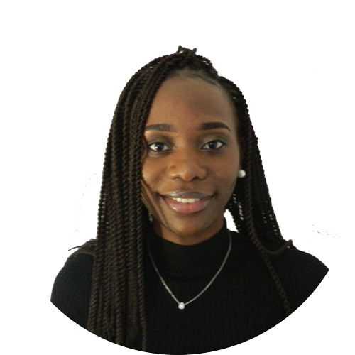
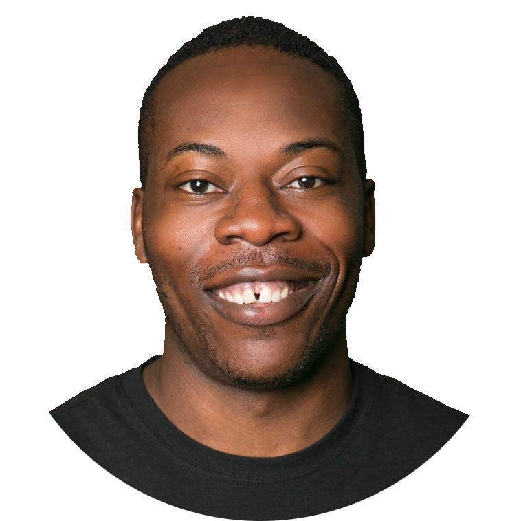

Notre équipe à votre disposition
Green DADA GD est une association à but non lucratif qui a pour mission de venir en aide aux populations des zones défavorisées en République centrafricaine

Audrey oliki-sioké
Fondatrice, Présidente et Représentante
Sylvie sagne
Vice-présidente
Désiré sioké gboze
Secrétaire

Nathanaël ngondo koweda
Administrateur
Yvonne molowa
Trésorière